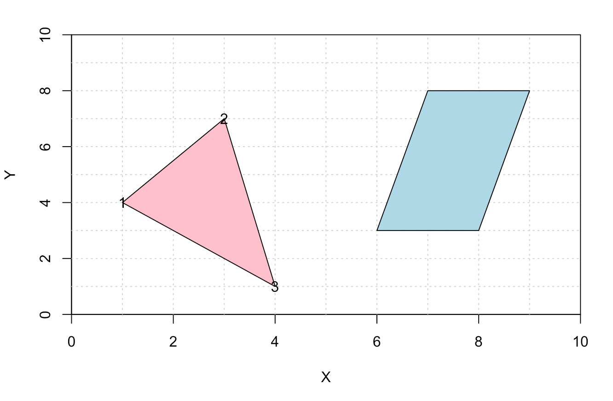
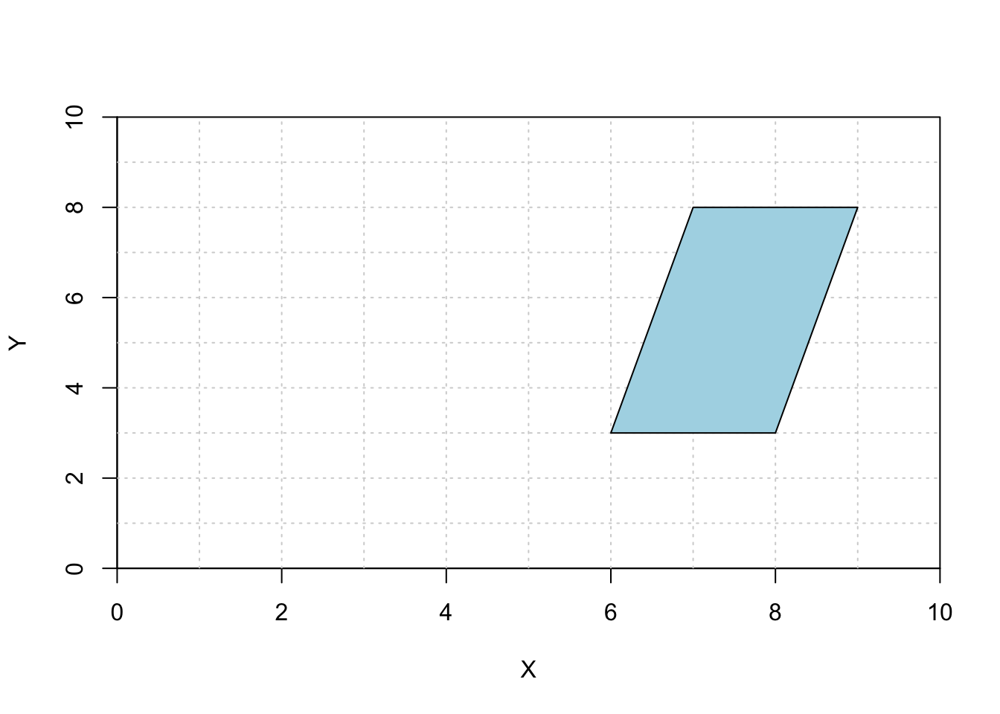
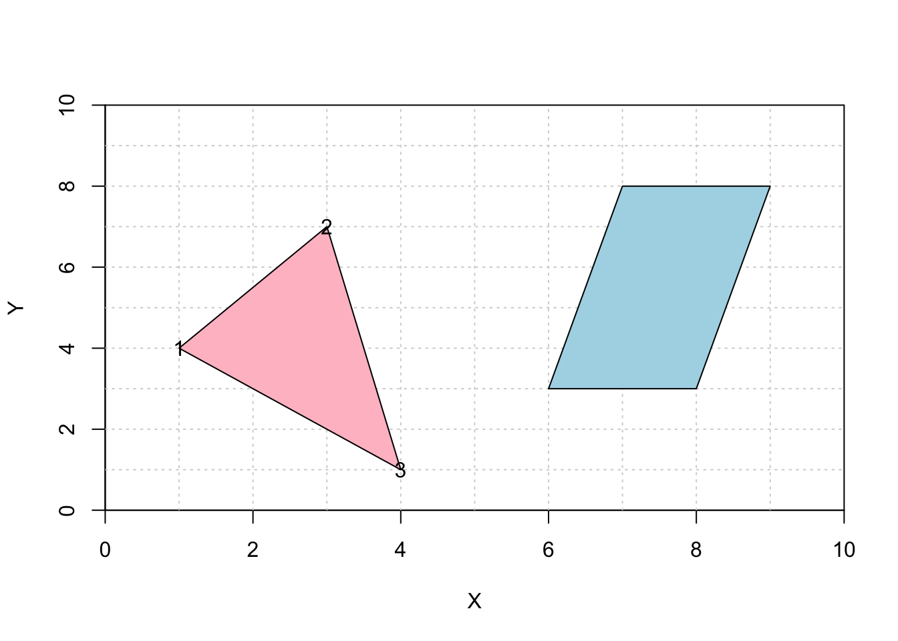

Show code
library(LearnGeom)In this post I create some polygons and line segments with LearnGeom.

1. Set UpTo create coordinate planes, trianges, and line segments I will be using the LearnGeom package.
library(LearnGeom)2. Coordinate PlaneTo create a coordinate plane I will first need to define x and y minimums and maximums, and then plot the planes with the CoordinatePlane() function.
x_min <- 0
x_max <- 10
y_min <- 0
y_max <- 10
LearnGeom::CoordinatePlane(x_min, x_max, y_min, y_max)NULL3. PolygonsTo create a triangle with labels:
Print the coordinate plane I just created.
Define three points of a triangle.
Use CreatePolygon() function to create the polygon.
Use the Draw() function to draw the polygon.
Define label = TRUE to show the points of a triangle.
LearnGeom::CoordinatePlane(x_min, x_max, y_min, y_max)NULLP1 <- c(1,4)
P2 <- c(3,7)
P3 <- c(4, 1)
Poly <- LearnGeom::CreatePolygon(P1, P2, P3)[1] "Some of the inserted points are collinear. This could lead to a defective polygon."LearnGeom::Draw(Poly, c("pink"), label = TRUE)
NULLTo create a trapezoid:
Print the coordinate plane I just created.
Define four points of a trapezoid.
Use CreatePolygon() function to create the polygon.
Note: The order of points will matter.
Draw() function to draw the polygon.LearnGeom::CoordinatePlane(x_min, x_max, y_min, y_max)NULLP4 <- c(6, 3)
P5 <- c(8, 3)
P6 <- c(9, 8)
P7 <- c(7, 8)
Poly2 <- LearnGeom::CreatePolygon(P4, P5, P6, P7)[1] "Some of the inserted points are collinear. This could lead to a defective polygon."LearnGeom::Draw(Poly2, c("light blue"))
NULLWe can also print both polygons on the same graph, shown below.
LearnGeom::CoordinatePlane(x_min, x_max, y_min, y_max)NULLLearnGeom::Draw(Poly, c("pink"), label = TRUE)NULLLearnGeom::Draw(Poly2, c("light blue"))
NULL4. Angle and Point Line SegmentsTo create a Segment Angle:
Print the coordinate plane I just created.
Define a points where the line originates from.
Define the angle of the line.
Define the length of the line.
Use CreateSegmentAngle() function to create the line segment.
Use the Draw() function to draw the line.
LearnGeom::CoordinatePlane(x_min, x_max, y_min, y_max)NULLP <- c(0,0)
angle <- 30
len <- 10
Segment <- LearnGeom::CreateSegmentAngle(P, angle, len)
LearnGeom::Draw(Segment, "blue")NULLSegment Point
To create a Segment (with) Point(s):
Print the coordinate plane.
Define two endpoint.
Use CreateSegmentPoint() function to create the line segment.
Use the Draw() function to draw the line.
LearnGeom::CoordinatePlane(x_min, x_max, y_min, y_max)NULLP1 <- c(2,8)
P2 <- c(8,6)
Segment <- LearnGeom::CreateSegmentPoints(P1, P2)
LearnGeom::Draw(Segment, "purple")
NULL